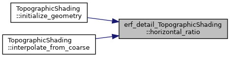
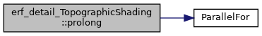
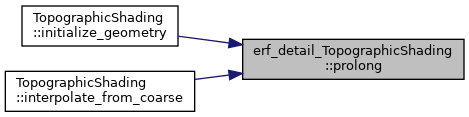

- Generated by
 1.9.1
1.9.1
|
ERF
Energy Research and Forecasting: An Atmospheric Modeling Code
|
Functions | |
| void | prolong (MultiFab &dst, const MultiFab &src, const IntVect &ratio, int nc) |
| IntVect | horizontal_ratio (const Geometry &coarse, const Geometry &fine) |
Variables | |
| constexpr Real | missing = Real(-1.e30) |
| IntVect erf_detail_TopographicShading::horizontal_ratio | ( | const Geometry & | coarse, |
| const Geometry & | fine | ||
| ) |
Referenced by TopographicShading::initialize_geometry(), and TopographicShading::interpolate_from_coarse().

| void erf_detail_TopographicShading::prolong | ( | MultiFab & | dst, |
| const MultiFab & | src, | ||
| const IntVect & | ratio, | ||
| int | nc | ||
| ) |
Referenced by TopographicShading::initialize_geometry(), and TopographicShading::interpolate_from_coarse().

